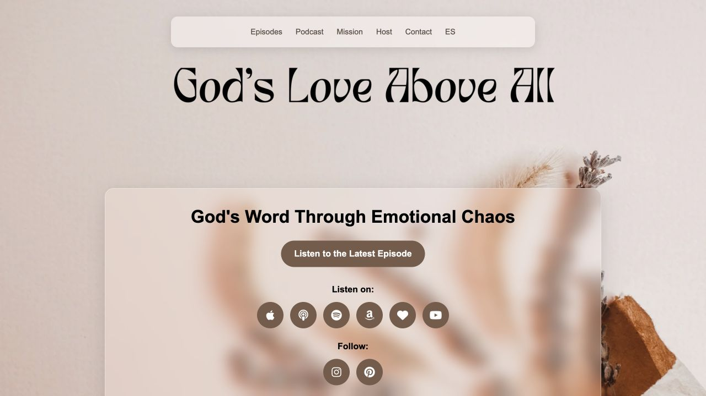

01 / Podcast / Ministry Website
God’s Love Above All
A calm digital home for a Christian podcast, with space for episodes, devotionals, and connection.
Visit website ↗ — God’s Love Above AllA word from the client
“Thank you for creating my website and for taking the time to listen to my requests. I truly appreciate your availability and timely responses. You always do a great job, and your kindness does not go unnoticed. It has been a pleasure working with you.”
— God’s Love Above All